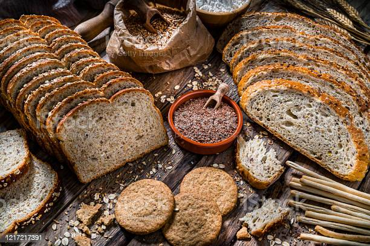

Your faery food may or may not look like this.
Faery Food
Food meant to attract faeries into your home. It's bread.
Note: This recipe is from the book, The Book of Faeries by Francis Melville.
"Faeries love food, particularly dairy products, bread, cakes, and cookies.
To make the faery food below, it is best to use organize and unprocessed ingredients if possible." 1
Tools Needed
- Stirring spoon
- Small saucepan (to hold at least one cup of liquid)
- A stovetop or campfire
- Somewhere to bake food
- Baking sheet or pan
- Somewhere to place hot baking sheet or pan on
Ingredients
- 3 oz (90 g) porridge oats
- 3 oz (90 g) mixed seeds (sesame, poppy, sunflower, or others)
- 1 oz (30 g) chopped hazelnuts
- 1 oz (30 g) condensed milk
- 2 oz (60 g) honey
- 3 oz (90 g) butter
Baking Insructions
- Melt the honey, milk, and butter in a saucepan.
- Once melted, remove from the heat and stir in the remaining ingredients.
- Press the mixture firmly into a shallow, well-greased, 8-in (20 cm) square baking pan
and place in the oven at 350 degree Fahrenheit (180 degrees Celsius/ gas mark 4) for 30 minutes.
- Allow to cool, then cut into small squares while still warm.
- Leave the food out for the faeries to enjoy.
Do not worry if the food you leave out does not appear to have been eaten.
Being only semi-corporeal at most, faeries seldom actually consume the body of the food.
Rather, they extract its essence. Faery food should therefore be discarded after a day, because
it will have little nutritional value left.1
Developer's note: Or you can eat the bread as a reward for feeding faeries. :-D
1.The Book of Faeries by Francis Melville